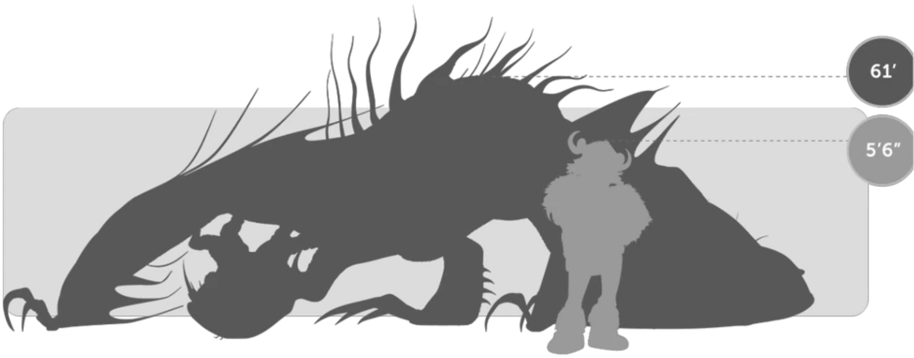
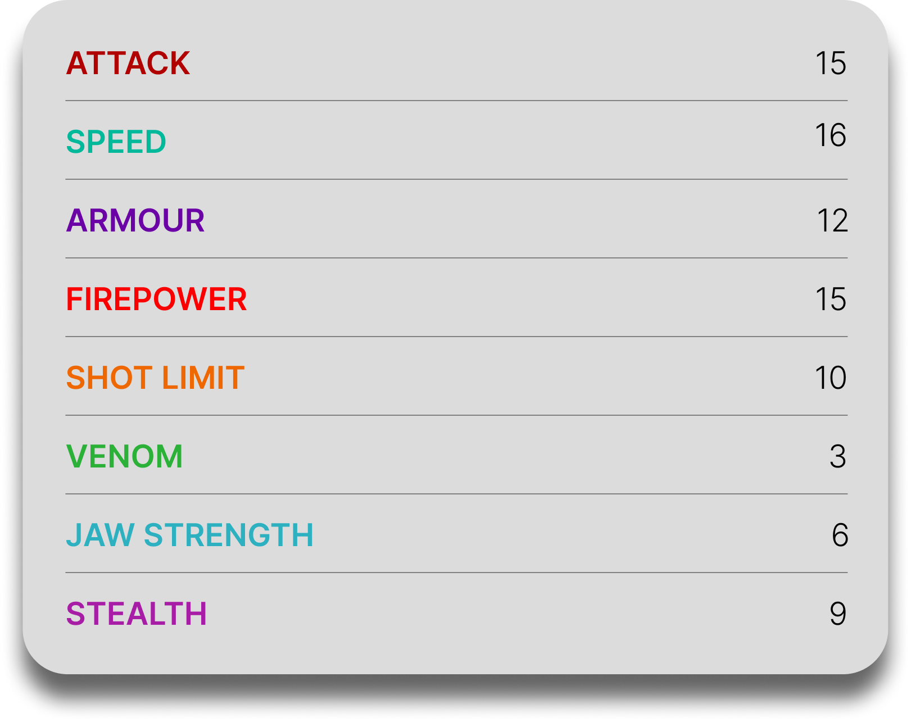

Monstrous Nightmare
General Overview
The Monstrous Nightmare is a medium-sized dragon belonging to the Stoker Class. Known as one of the most fearsome and destructive dragon species, it is recognized for its aggressive temperament, powerful fire attacks, and intimidating appearance. Highly dangerous in battle, the Monstrous Nightmare combines brute strength, speed, and fire-based abilities, making it one of the most iconic and formidable dragons in existence.


Physical Appearance
- Body & Color: It has a muscular, reptilian body covered in thick scales, usually colored in shades of red, orange, and yellow that reflect its fiery nature.
- Head & Face: Its head is broad and menacing, with sharp teeth, prominent horns, and fierce eyes that enhance its intimidating look.
- Appendages: It has strong limbs and sharp claws that make it effective in both climbing and close combat.
- Wings & Tail: Its large wings allow for powerful flight, while its long tail provides balance, control, and additional striking force during combat.
Abilities and Combat
- Fire Breath: It can unleash powerful streams of fire capable of causing massive destruction and overwhelming opponents.
- Gel Ignition: It is able to cover its body in a flammable gel and ignite itself, turning into a living fireball during battle.
- Intimidation: Its fierce appearance and aggressive behavior make it highly effective at scaring enemies and asserting dominance.
- Physical Strength: It possesses tremendous strength, allowing it to overpower many opponents through brute force.
- Speed & Agility: Despite its power, it is fast and agile in the air, capable of pursuing enemies and maneuvering effectively in combat.
- Heat Resistance: It thrives in extreme heat and uses fire not only as a weapon, but also as a natural extension of its body.
Behavior and Personality
- Intelligence: It is highly intelligent and capable of recognizing threats, learning quickly, and adapting its tactics in battle.
- Temperament: The Monstrous Nightmare is aggressive, proud, and highly territorial, often reacting fiercely when challenged.
- Behavior: It is a bold and confrontational dragon that prefers direct attacks and rarely hesitates in the face of danger.
- Loyalty: Although dangerous by nature, once trust is earned, it can become deeply loyal and protective toward its rider.
- Diet: Their diet consists mainly of fish, though they also enjoy honeycombs and certain fruits like apples.